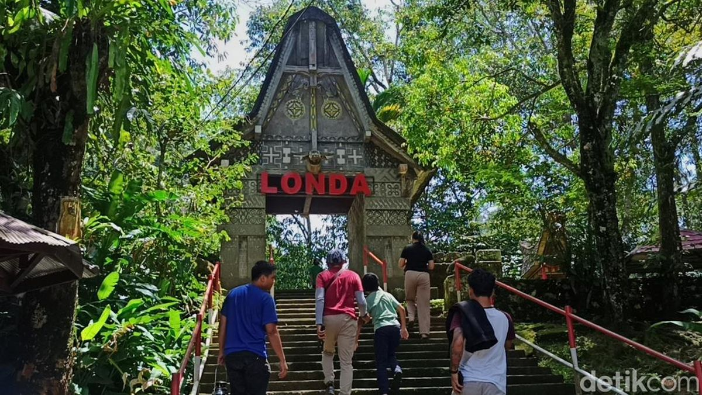
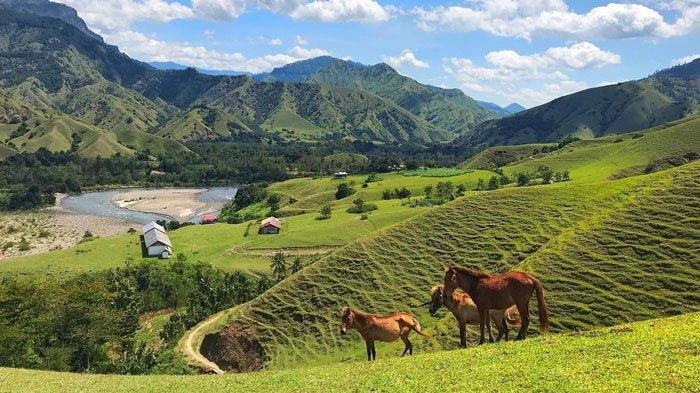

Selamat Datang di Tana Toraja
Jelajahi pesona budaya, keindahan alam, dan tradisi yang memukau di Tana Toraja, Sulawesi Selatan.

londa
Londa adalah kuburan gua alam milik rumpun keluarga To Lengke' dan To Pangra'pa' di Tadongkon, Kesu'. Akibat perkembangan pariwisata, Londa telah populer hingga ke manca negara bahkan sudah mewakili nama dari kuburan yang sebelumnya sudah memiliki nama sendiri-sendiri.
bori kalimbuang
Simbuang batu adalah batu megalitik yang telah dipahat menjadi menhir. Simbuang mempunyai arti penting bagi orang Toraja, merupakan simbol status sosial bagi yang mendirikan dan memilikinya..

Bukit Ollon
Ollon, pesona yang saat ini sangat menarik banyak wisatawan untuk datang kesana. Kawasan wisata Ollon terletak di kecamatan Bonggakaradeng, Tana Toraja.